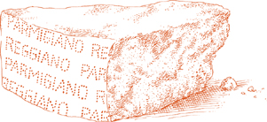
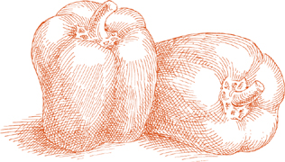

You may complete the dish up to this point several hours in advance on the same day you are going to serve it. Do not refrigerate.
You may complete the dish up to this point several hours in advance on the same day you are going to serve it. Do not refrigerate.For 6 servings or more if served as an appetizer
8 to 10 fresh zucchini
1 tablespoon butter
1 tablespoon vegetable oil
1 tablespoon onion chopped fine
¼ pound boiled unsmoked ham, chopped fine
Salt
Black pepper, ground fresh from the mill
Béchamel Sauce, prepared as directed, using 1 cup milk, 2 tablespoons butter, 1½ tablespoons flour, and ⅛ teaspoon salt
¼ cup freshly grated parmigiano-reggiano cheese
Whole nutmeg
1 egg
An oven-to-table baking dish
Butter for smearing and dotting the baking dish
Unflavored bread crumbs, lightly toasted
1. Soak and clean the zucchini as directed, but do not cut off the ends.
2. Bring 3 to 4 quarts of water to a boil, put in the zucchini, and cook until partly tender, still somewhat resistant when prodded with a fork. Drain, and as soon as they are cool enough for you to handle, cut off both ends, cut each zucchini into 2 shorter pieces, then cut each piece lengthwise in half. Using a teaspoon, gently scoop out the zucchini flesh, taking care not to break the skin. Discard half the scooped out flesh, and coarsely chop the other half. Set both the chopped flesh and the hollowed zucchini aside.
3. Preheat oven to 400°.
4. Put the butter, oil, and onion in a skillet, turn on the heat to medium, and sauté the onion just until it becomes translucent. Add the chopped ham, and cook it for about 1 minute, stirring once or twice. Add the chopped zucchini flesh, turning it to coat it well, and turn the heat up to high. Cook, stirring from time to time, until the zucchini becomes colored a rich gold and acquires a creamy consistency. Add salt and pepper, stir quickly once or twice, then transfer the contents of the skillet to a small bowl, using a slotted spoon or spatula.
5. Prepare the béchamel, cooking it long enough to make it rather thick. Pour the béchamel into the bowl with the sautéed zucchini flesh, mix, then add the grated Parmesan, a tiny grating of nutmeg—about ⅛ teaspoon—and the egg, and mix quickly until you obtain a uniform blend of all the ingredients.
6. Smear the bottom of the baking dish with butter. Place the hollowed-out zucchini in the dish, skin side facing down. Fill each one with the béchamel and zucchini flesh mixture, sprinkle with bread crumbs, and dot with butter.
7. Place the dish on the uppermost rack of the preheated oven, and bake for 15 to 20 minutes, until a light golden crust forms on top. After taking the dish out of the oven, allow it to settle for 5 to 10 minutes before bringing it to the table.
Ahead-of-time note You may complete the dish up to this point several hours in advance on the same day you are going to serve it. Do not refrigerate.

For 6 servings
10 fresh zucchini, about 1¼ to 1½ inches in diameter
3 cups onion sliced thin
3 tablespoons vegetable oil
2 tablespoons chopped parsley
2 tablespoons tomato paste, diluted with 1 cup lukewarm water
3 tablespoons milk or more
⅔ slice good, firm white bread, crust trimmed away
½ pound ground beef, preferably chuck
1 egg
3 tablespoons freshly grated parmigiano-reggiano cheese
1 tablespoon chopped prosciutto OR boiled unsmoked ham
Salt
Black pepper, ground fresh from the mill
1. Soak and clean the zucchini as directed, slice off both ends, and cut each zucchini into 2 shorter pieces. Using a vegetable corer, or the blade of a peeler, or any narrow enough sharp tool, hollow out the zucchini pieces, taking care not to pierce the sides. Keep the thinned-out wall of the zucchini at least ¼ inch thick. The scooped out flesh is not needed in this recipe, but you can use it in a risotto or a frittata.
2. Choose a saute pan that can subsequently accommodate all the zucchini pieces snugly, but without overlapping. Put in the onion and the oil, turn on the heat to medium low, and cook, stirring, until the onion wilts and becomes tender. Add the parsley, stir 2 or 3 times, then add the diluted tomato paste, turning it thoroughly with the onions, and continue cooking for 15 more minutes.
3. At the same time, put the milk in a small saucepan, warm it without bringing it to a boil, mash the bread into it, and set aside to cool.
4. Put the ground beef, the egg, the grated Parmesan, the chopped prosciutto or ham, the bread and milk mush, salt, and pepper into a bowl, and knead with your hands until you obtain an evenly blended mixture.
5. Stuff the mixture into the hollowed-out zucchini, packing it tightly, but being careful not to split the vegetable’s fragile walls. Put the stuffed zucchini into the pan with the onion and tomato, cover, and cook at medium low heat until the zucchini are tender, about 40 minutes, depending on their youth and freshness. Turn them over from time to time while cooking.
6. When done, if the juices in the pan are watery, uncover, raise the heat to high, and boil them down. Taste and correct for salt. Turn the zucchini once or twice, transfer the contents of the pan to a serving platter, and allow to settle for a few minutes before bringing to the table.
Ahead-of-time note Here is one of those dishes that has nothing to gain from being served the moment it’s done. Its flavor improves when it is served several hours or even a day later. Reheat it gently in a covered pan, and serve warm, but not steaming hot.

Female and Male zucchini blossoms
THE LUSCIOUS orange-yellow blossoms of zucchini are very perishable, so you are likely to find them only in those markets that handle local, seasonal produce. There are both male and female blossoms, and only the male, those on a stem, are good to eat. The female blossoms, attached to the zucchini, are mushy and don’t taste good.
For 4 to 6 servings
1. Wash the blossoms rapidly under cold running water without letting them soak. Pat them gently but thoroughly dry with soft cloth or paper towels. If the stems are very long, cut them down to 1 inch. Make a cut on one side of each blossom’s base to open the flower flat, butterfly fashion.
2. Pour enough oil in a frying pan to come ¾ inch up its sides, and turn on the heat to high. When the oil is very hot, use the blossoms’ stems to dip them quickly in and out of the batter, and slip them into the skillet. Put in only as many as will fit very loosely. When they have formed a golden brown crust on one side, turn them and do the other side. Transfer to a cooling rack to drain or to a platter lined with paper towels, using a slotted spoon or spatula. If any blossoms remain to be done, repeat the procedure. When they are all done, sprinkle with salt, and serve immediately.
For 6 servings
4 medium round, waxy, boiling potatoes
3 sweet bell peppers, preferably yellow
3 fresh, firm, ripe, round OR 6 plum tomatoes
4 medium yellow onions
A shallow baking dish
¼ cup extra virgin olive oil
Salt
Black pepper, ground fresh from the mill
1. Preheat oven to 400°.
2. Peel the potatoes, cut them into 1-inch wedges, wash them in cold water, and pat dry with cloth towels.
3. Cut the peppers along their folds into lengthwise sections. Scrape away and discard the pulpy core with all the seeds. Skin the peppers, using a peeler with a swiveling blade.
4. If using round tomatoes, cut them into 6 to 8 wedge-shaped sections; if using plum tomatoes, cut them lengthwise in two.
5. Peel the onions and cut each one into 4 wedge-shaped sections.
6. Wash all the vegetables, except for the onions and the already washed potatoes, in cold water, and drain well.
7. Put the potatoes and all the vegetables into the baking dish. They should not be too snugly packed or they will steep in their own vapors and become soggy. Add the oil, salt, and several grindings of pepper, and toss once or twice. Place the dish in the upper third of the preheated oven. Turn the vegetables over every 10 minutes or so. The dish is done when the potatoes become tender, in about 25 to 30 minutes. If after 20 minutes you find that the tomatoes have shed a lot of liquid, turn up the oven to 450° or higher for the remaining cooking time. Do not be concerned if some of the vegetables become slightly charred at the edges. It is quite all right and even desirable.
8. When done, transfer the vegetables to a warm platter, using a slotted spoon or spatula to drain them of oil. Scrape loose any bits stuck to the sides or bottom of the baking dish and add them to the platter, for they are choice morsels. Serve at once.

PLEASE READ this recipe through before you begin to cook. You will find that at any one time you may be handling several vegetables at different stages of their cooking. It is not at all a daunting procedure, it can be, in fact, rather a lot of fun to do, but it will all go much more smoothly if you first get a sense of its rhythm.
For 4 to 6 servings
2 fresh, glossy, medium zucchini
1 large flat Spanish onion
Salt
2 sweet yellow or red bell peppers
2 fresh, ripe, firm, large round tomatoes
1 medium eggplant
2 heads Belgian endive
Extra virgin olive oil
Crushed black peppercorns
1 teaspoon chopped parsley
⅛ teaspoon chopped garlic
½ teaspoon unflavored bread crumbs, lightly toasted
A charcoal-fired grill or gas-fired lava rocks
A pair of tongs
1. Soak the zucchini in cold water for 20 minutes, then wash them in several changes of water, rubbing their skins clean. Slice off both ends and cut the zucchini lengthwise into slices less than ½ inch thick.
2. Cut the onion in half at its middle, and score the cut sides in a cross-hatch pattern, stopping well short of the skin. Do not remove the flaky outer skin or cut off the onion’s point or root. Sprinkle the cut sides with salt.
3. Wash the peppers in cold water, keeping them whole.
4. Wash the tomatoes in cold water and divide them in two at their middle.
5. Wash the eggplant in cold water. Trim away its green top. Cut the eggplant lengthwise in two, and make shallow cross-hatched cuts on both cut sides, staying well short of the skin. Rub salt liberally into the cuts.
6. Split the endive heads lengthwise in two. Make 2 or 3 deep cuts at their base.
7. Light the charcoal or turn the gas-fired grill on to very hot.
8. When the coals have begun to form white ash, or the lava rocks are very hot, put the onion, cut side down, on the grill. Place the peppers alongside. Check the peppers after a few minutes; when the skin facing the fire is charred and the peppers begin to shrink, turn them with the tongs, bringing them closer together to make room for other vegetables as described below. Continue turning the peppers each time the skin facing the fire becomes charred, eventually standing them on end. When they are charred all over, put them into a plastic bag, twisting it tightly closed.
9. While cooking the peppers, check the onion. When the side facing the fire becomes charred, turn it over with a spatula, being careful not to separate any of the rings. Coat the charred side with olive oil, working it in between the cuts, and sprinkle with salt. Let the onion cook another 15 or 20 minutes, when it should feel tender, but firm when prodded with a fork. Remove its charred, outer skin, put the onion on the serving platter that will hold all the vegetables, cut each half into 4 parts, drizzle with olive oil, and sprinkle with cracked black pepper.
10. When you first turn the peppers and draw them closer together, use the space you made available on the grill for the tomatoes, placing them cut side facing down. Check them after a few minutes, and if they are already slightly charred, turn them over. Season each half with olive oil, salt, and some of the parsley, garlic, and bread crumbs. You needn’t do anything else about the tomatoes until they have shrunk to nearly half their original size. Then transfer them to the serving platter.
11. When you put on the tomatoes also put the eggplant on the grill, its scored side facing the fire. Let that side become colored a light brown, then turn it over. Brush generously with olive oil, working the oil in between the cuts. You should soon see the oil begin to simmer. From time to time, drizzle a few drops of oil into the cuts. When the eggplant flesh feels creamy at the point of a fork, it is done. Transfer it to the serving platter.
12. At the same time that you put the eggplant on the grill, put on the endive, cut side facing down. If there is no room, put it on as soon as some opens up. When the cut side of the endive becomes lightly charred, but not deeply blackened, turn it over. Sprinkle with salt, and brush it generously with olive oil, working it in between the leaves. You need do nothing else with the endive except test it from time to time with a fork. When it feels very, very tender, transfer it to the platter.
13. When you see that the eggplant is nearly done, and you have room on the grill, put on the sliced zucchini. These easily become burned, so you have to watch them. The moment the side facing the fire becomes mottled with brown spots, turn it over, and when the other side becomes similarly pockmarked, transfer it to the platter. Season immediately with salt, cracked black pepper, and olive oil.
14. By now, the peppers you’ve put in the plastic bag should be ready to be peeled. Take them out of the bag and have plenty of paper towels available for your hands, because the peppers will be very moist. Pull off all the charred skin, split the peppers open, remove the pulpy core with all its seeds, and add the peppers to the platter. Season with salt and a little olive oil.
Ahead-of-time note All the grilled vegetables are good at room temperature or the temperature of a warm day outdoors. They can be cooked, therefore, before whatever meat or fish you are planning to do on the grill.